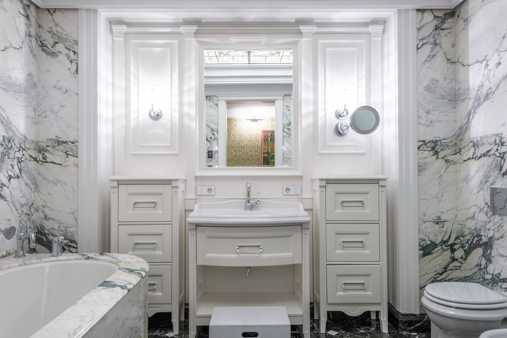
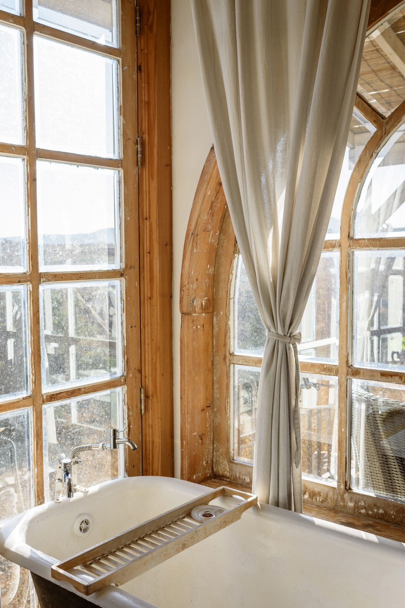

Arquitetura e interiores desenhados a partir de como você quer viver — do primeiro esboço ao último acabamento.
ExplorarNa Traço, cada projeto é conduzido de perto, do primeiro encontro à entrega da obra. Bom design nasce de escuta: como você vive, o que te acalma, o que ainda não sabe nomear.
É daí que nascem a planta, a luz e os materiais. O resultado precisa ser bonito, mas antes disso, precisa ser seu.
Projetos organizados por ambiente, do living à fachada. Arraste, role ou use os filtros para navegar entre eles.
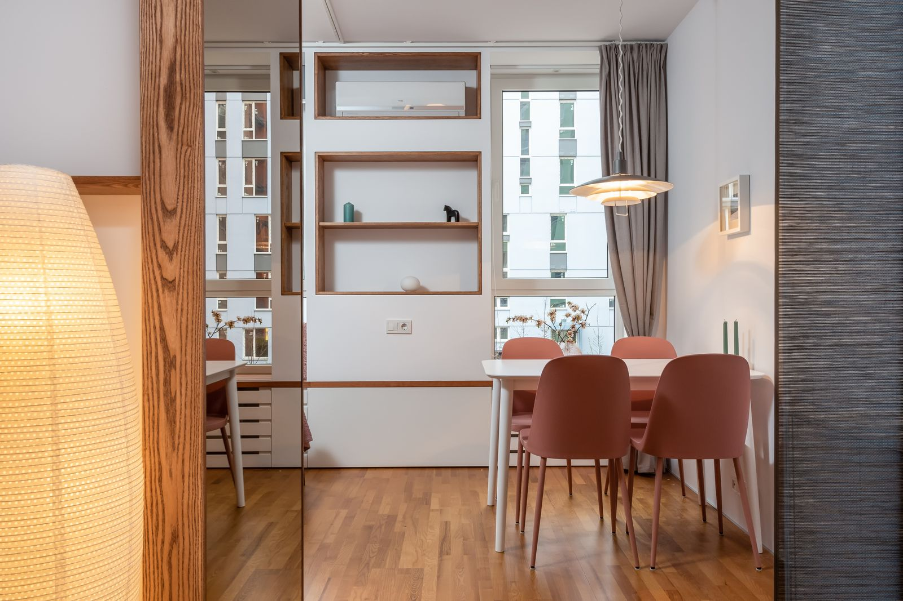
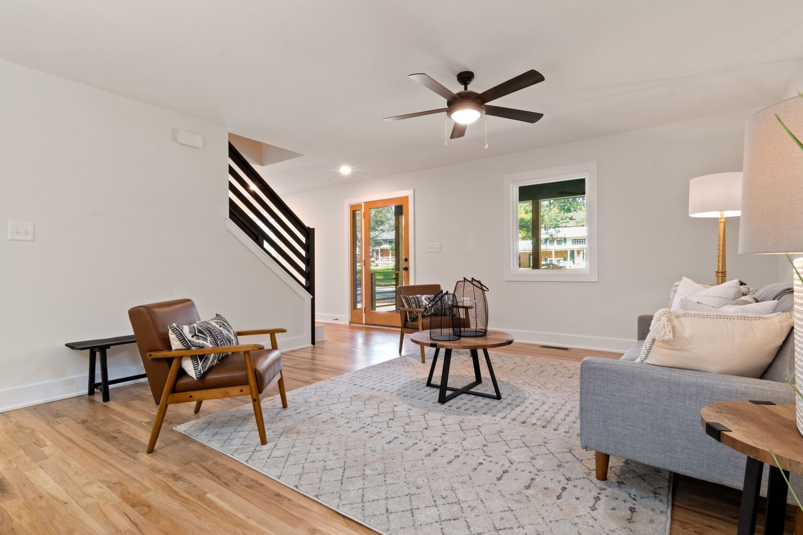

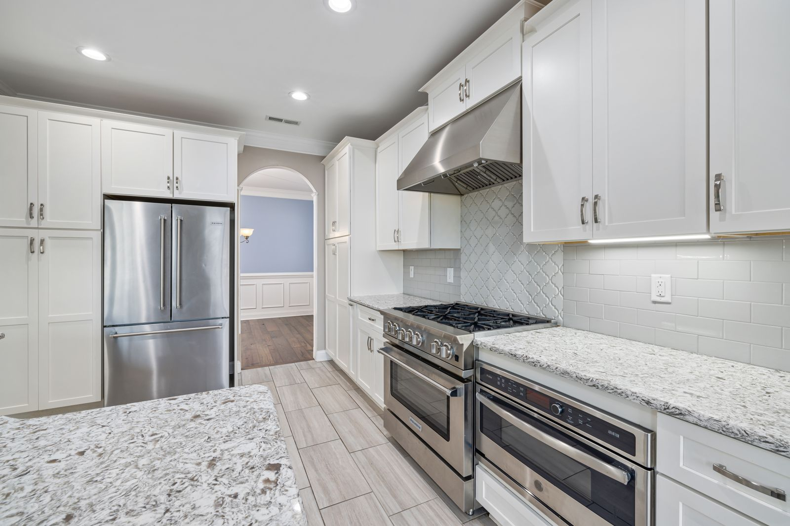

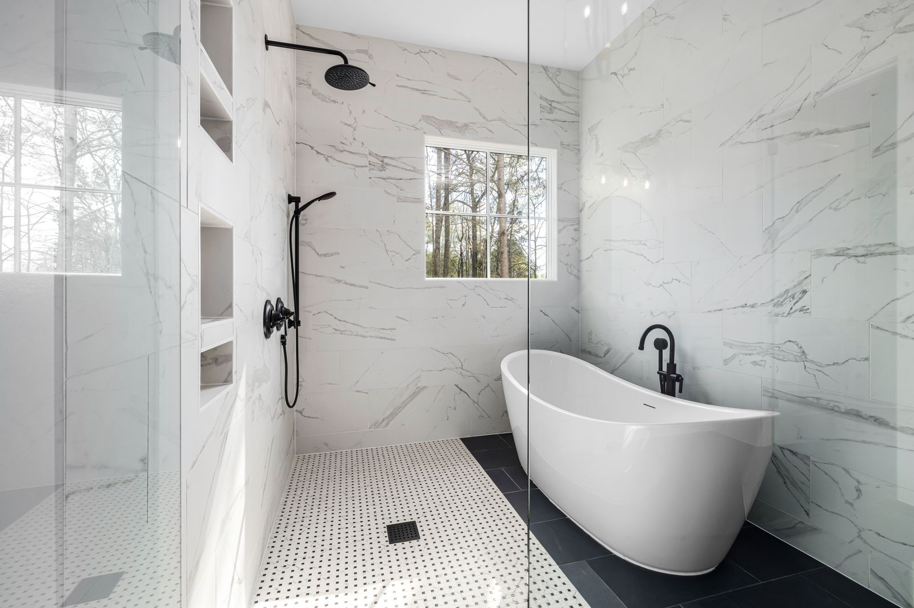
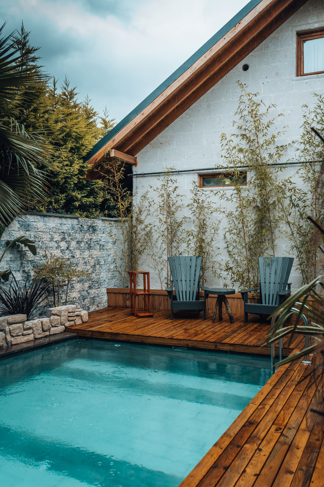
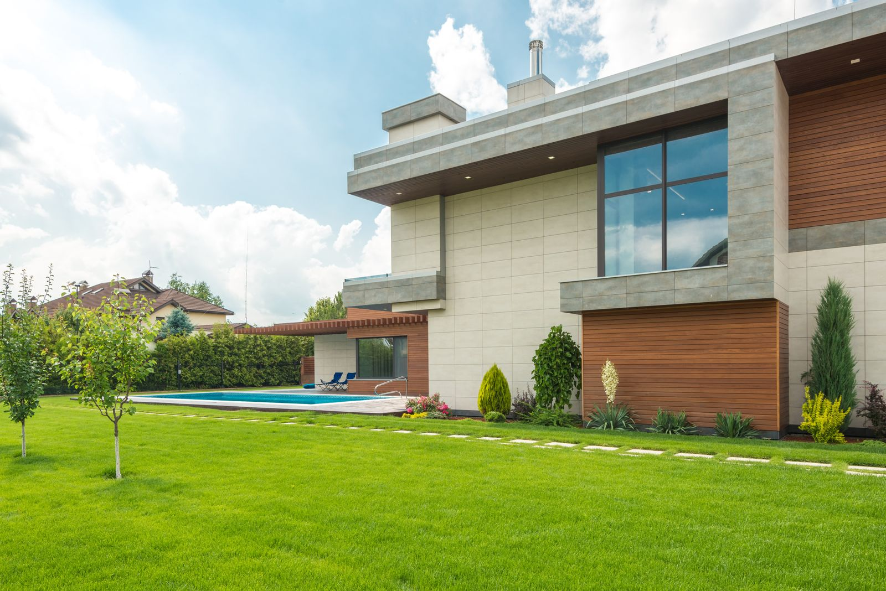
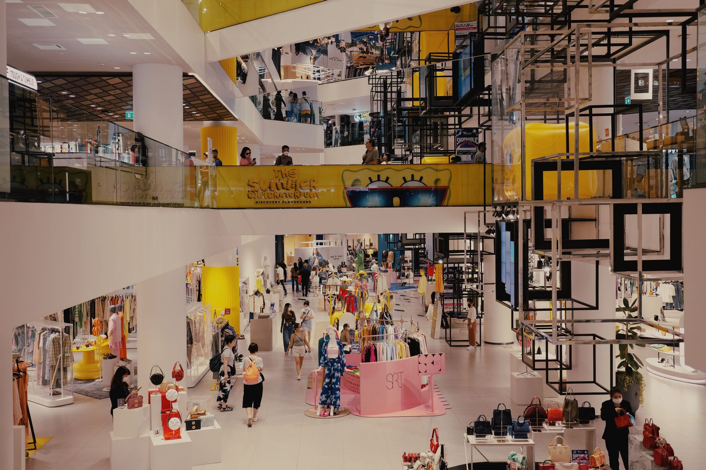
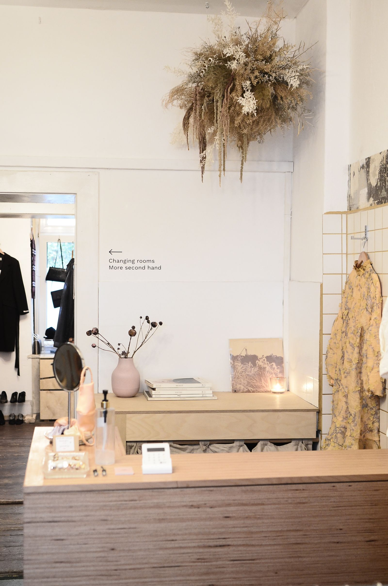
Fotos de banco de imagens gratuito, usadas como exemplo de curadoria e enquadramento — não representam um portfólio real de um profissional específico.


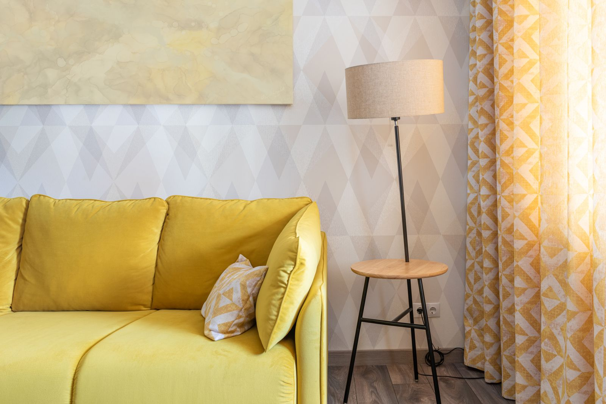
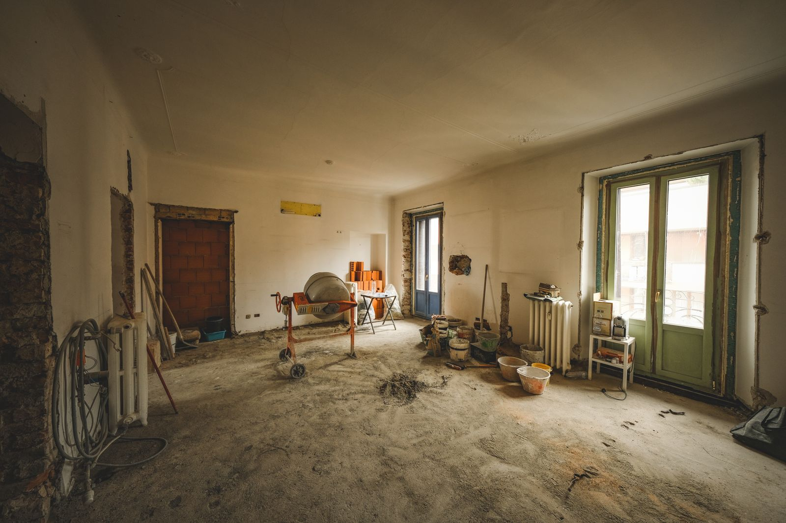

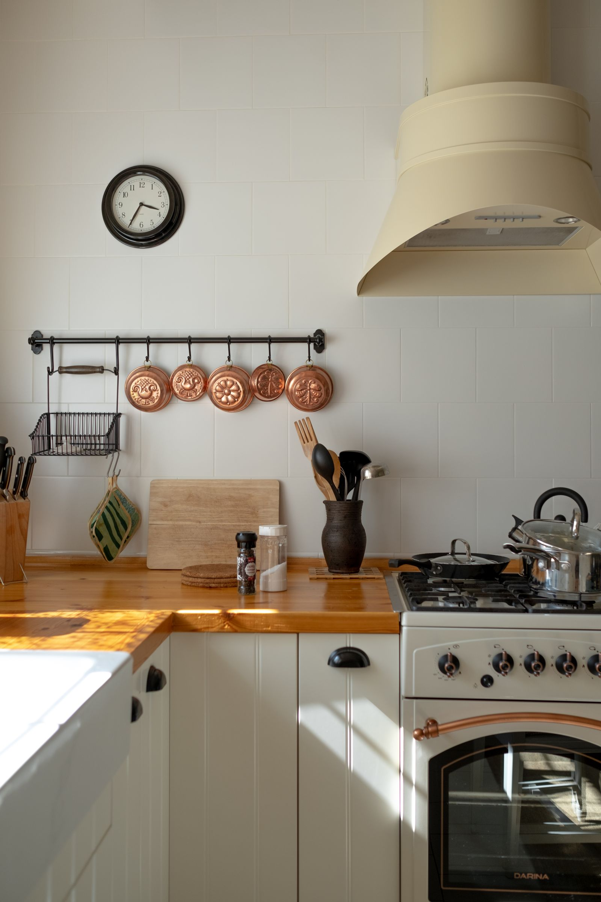
Imagens ilustrativas de banco de imagens, usadas para demonstrar o formato de apresentação — não representam um projeto real executado. Passe o mouse ou toque para revelar o "antes".
Atendimento presencial na sua região, com visitas de obra quando fizer sentido. Para quem está longe, o processo funciona igual: reuniões por vídeo, entrega em prancha digital, orientação direta para a equipe executora.
Uma conversa inicial sem compromisso para entender seu portfólio, seu prazo e o que faz sentido priorizar primeiro.
Agendar consultoria